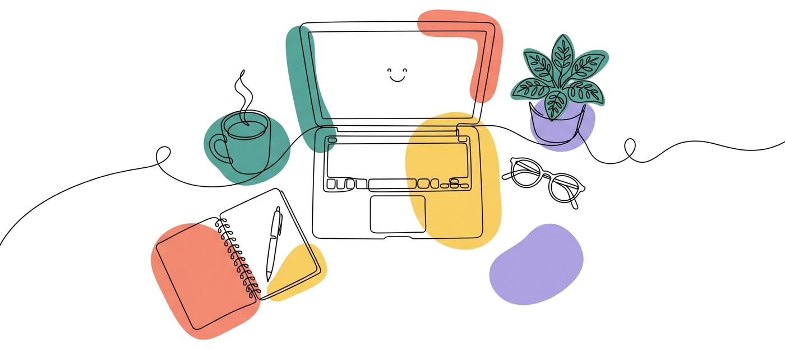
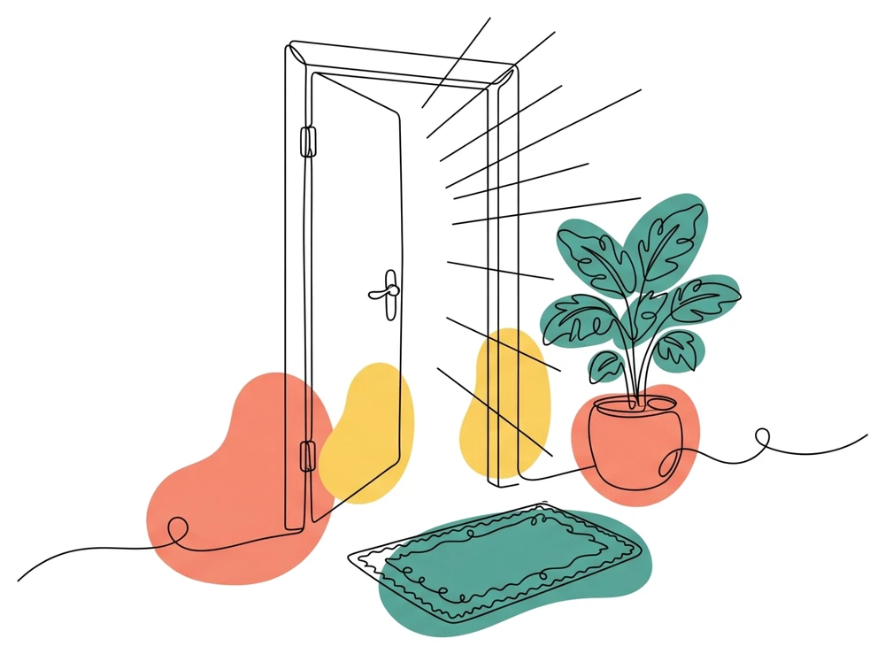

Работайте с клиентами – остальное возьмём на себя
Клиенты, запись, напоминания, оплата и переписка – в одном кабинете. Вы занимаетесь терапией, а не поиском клиентов и таблицами.
Проверка документов – до 3 дней

Всё для работы онлайн – в одном месте
Так выглядит ваш рабочий кабинет


Четыре шага до первого клиента
-
1
10 минут
Регистрация и анкета
Заполните профиль: образование, методы, опыт и стоимость сессии.
-
2
до 3 дней
Проверка документов
Модератор сверяет дипломы и сертификаты, которые вы загрузили.
-
3
30 минут
Собеседование
Видеовстреча с психологом-экспертом: поговорим о вашем подходе.
-
4
сразу
Профиль в каталоге
Отмечаете свободное время – и клиенты могут записываться.
Вопросы психологов
Можно ли совмещать с частной практикой?
Да. «Рядом» – дополнительный источник клиентов. Вы сами решаете, сколько окон открыть в расписании, и можете в любой момент закрыть запись.
Кто устанавливает стоимость сессии?
Вы. Цена указывается в профиле и видна клиентам в каталоге. Изменить её можно в любой момент – для уже созданных записей сохранится прежняя стоимость.
Что если клиент не пришёл или отменил запись?
Клиент может бесплатно отменить или перенести сессию не позднее чем за 24 часа. При более поздней отмене или неявке оплата сохраняется за вами.
Сколько времени занимает проверка?
Обычно до 3 дней на проверку документов и ещё 30 минут на собеседование. Статус заявки виден в личном кабинете.
Сколько клиентов нужно брать?
Минимума нет. Можно начать с 2–3 окон в неделю и добавлять время, когда будете готовы.
Не нашли ответ? Напишите нам – support@ryadom.by

Двери открыты
Подайте заявку – модератор проверит документы и напишет вам в течение 3 дней. Если остались вопросы, напишите в поддержку.